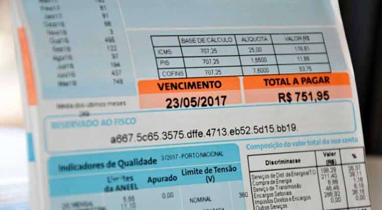
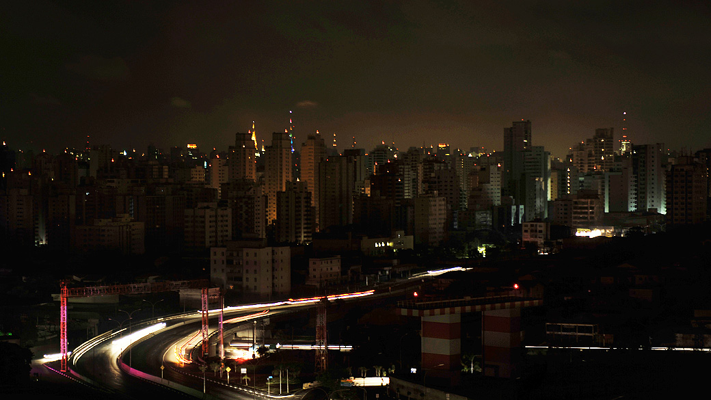

A crise hídrica que atinge seu ápice no Brasil durante o segundo semestre de 2021 é uma tragédia em três atos: as queimadas, a falta de chuvas e o impacto no bolso do consumidor, que paga cada vez mais caro pela conta de luz.
O impacto ambiental afetou a situação hídrica de agosto, provocando crise nos reservatórios do Brasil. Sem água, as hidrelétricas trabalham menos. A situação gerou um cenário de instabilidade e tornou iminente a possibilidade de falta de energia elétrica no segundo semestre. Vem aí um apagão? Enfrentaremos um racionamento de energia?
“A gente está em uma situação bem crítica no setor elétrico. Ainda não é certo que esses dois fenômenos vão ocorrer, mas o risco é significativo”, reconhece Luciano Losekann, professor do Departamento de Economia da UFF (Universidade Federal Fluminense) e membro do Grupo de Economia da Energia, vinculado à UFRJ (Universidade Federal do Rio de Janeiro).
O governo federal reconhece que a situação hídrica do Brasil é preocupante, mas descarta um apagão. O ministro da Casa Civil, Ciro Nogueira, tenta agendar uma reunião entre a cúpula do Palácio do Planalto para debater a questão. E o vice-presidente Hamilton Mourão, por enquanto, vê a situação sob controle.
“O que eu tenho acompanhado é que o governo tomou as medidas necessárias, criou uma comissão para acompanhar e tomar as decisões a tempo e a hora, no sentido de impedir que haja apagão”, disse – sem, no entanto, descartar um racionamento.
“Pode ser que tenha que ocorrer algum racionamento - o próprio ministro falou isso. Vamos torcer. Nós temos uma matriz energética muito baseada em hidrelétrica. A maior parte é para atividade da agropecuária, o consumo humano é menor parte, a outra é geração de energia. Tem que haver uma dosagem disso aí”, completou.
No fim de agosto, frente à escassez de águas, a Aneel (Agência Nacional de Energia Elétrica) anunciou a criação da bandeira “escassez hídrica” para adicionar R$ 14,20 a cada 100 kW/h consumidos.
A tarifa é válida até abril de 2022 e substitui o valor anterior de R$ 9,49. O ministro de Minas e Energia, Bento Albuquerque, ainda admite usar usinas termelétricas e importar energia de países vizinhos para tentar diminuir o impacto econômico da seca.